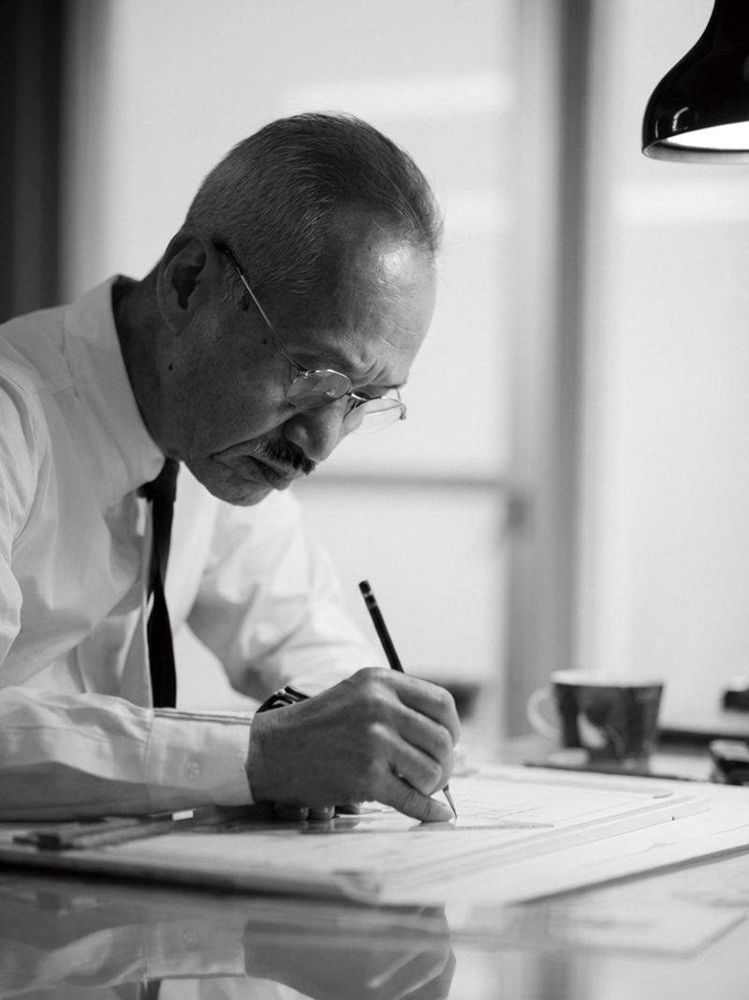
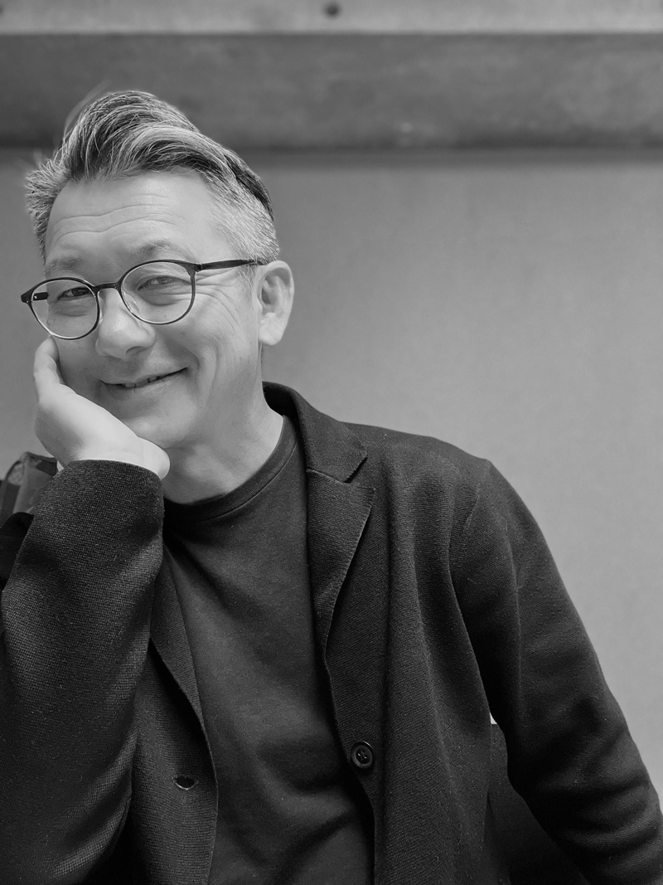
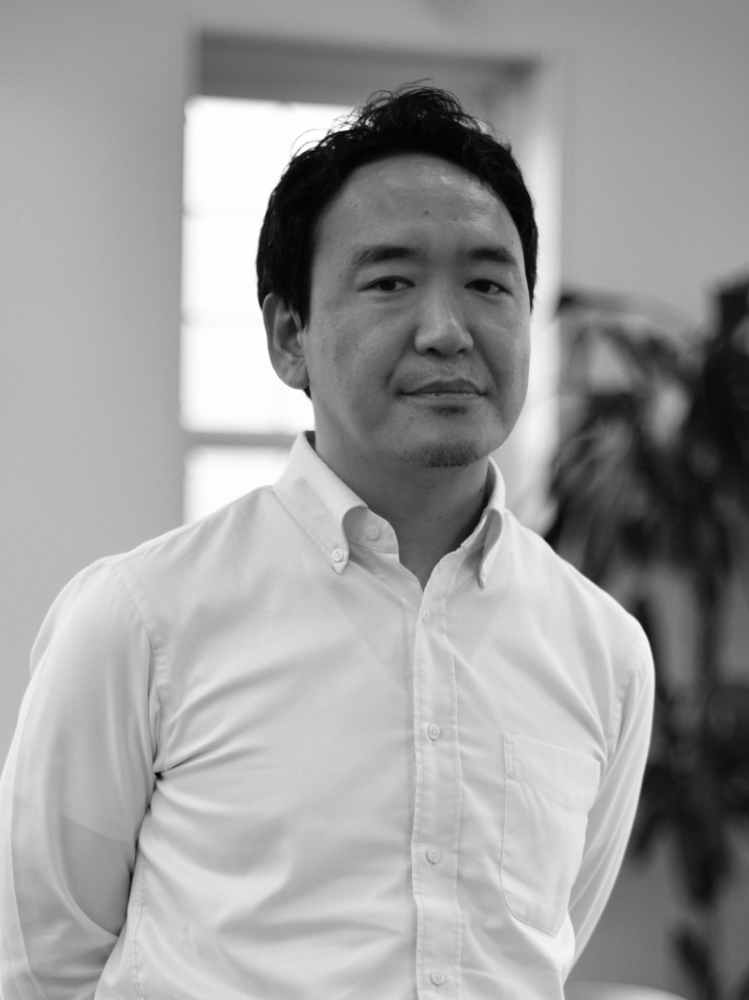
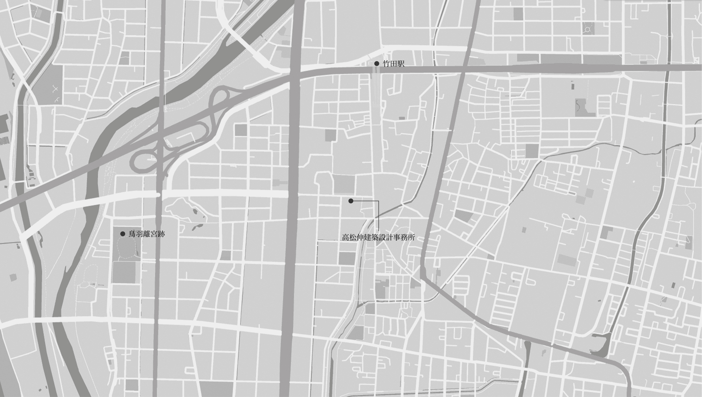

Scroll
A short film — 90 sec
News
| 放送日 | ゲスト | |
|---|---|---|
| 初 回 | 04月05日 | 高松 伸 フリートーク |
| 第2回 | 04月12日 | 大迫弘和様 海城中学高等学校校長 |
| 第3回 | 04月19日 | 大迫弘和様 海城中学高等学校校長 |
| 第4回 | 04月26日 | 川原達也様 KAWAHARA KRAUSE ARCHITECTS主宰 / ドイツ・カッセル大学教授 |
| 第5回 | 05月03日 | 川原達也様 KAWAHARA KRAUSE ARCHITECTS主宰 / ドイツ・カッセル大学教授 |
| 第6回 | 05月10日 | 寺西俊輔様 ㈱MIZEN 代表 |
| 第7回 | 05月17日 | 寺西俊輔様 ㈱MIZEN 代表 |
| 第8回 | 05月24日 | 蘆田暢人様 ㈱蘆田暢人建築設計事務所 代表 |
| 第9回 | 05月31日 | 吉川敏一様 京都府立医科大学名誉教授・元学長 |
| 第10回 | 06月07日 | 松下康士様 有限会社松下住建設計 代表 |
| 第11回 | 06月14日 | 黒崎敏様 ㈱APOLLO一級建築士事務所 代表 |
| 第12回 | 06月21日 | 黒崎敏様 ㈱APOLLO一級建築士事務所 代表 |
| 第13回 | 06月28日 | 梶原典男様 ㈱トークリビング 代表 |
Journal
2025.04
2025.05
2025.04
Member

高松 伸
（株式会社高松伸建築設計事務所主宰）
島根県生まれ
京都大学工学部建築学科卒
同大学大学院博士課程修了
京都大学名誉教授 工学博士
アメリカ建築家協会（AIA) 名誉会員
ドイツ建築家協会（BDA) 名誉会員
英国王立建築家協会（RIBA) 会員
芸術選奨文部大臣賞をはじめ国内外で多くの賞を受賞

鈴木 哲也
（Re-kyu concept 事業推進室 室長）
慶應義塾大学文学部美学美術史学美学学士
早稲田大学芸術学校建築科卒

刀祢平 喬
（Re-kyu concept 事業推進室）
東京造形大学デザイン学部 視覚伝達デザイン学科 造形学士
Contact

〒612-8445 京都府京都市伏見区竹田浄菩提院町195
E-mail suzuki.tetsuya@re-kyu.jp